| One-Handed Swords | Min/Max 1h Damage | Min Strength | Min Dexterity | Rangeadder | Durability | Sockets | Speed by Class | Quality Level | |
|---|---|---|---|---|---|---|---|---|---|
|
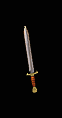
Short Sword |
2 to 7 (4.5 Avg) | - | - | 0 | 24 | 2 | [0] Ama, Asn, B, D, N, P - Fast S - Normal |
1 | |
|
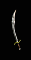
Scimitar |
2 to 6 (4 Avg) | - | 21 | 0 | 22 | 2 | [-20] Ama, Asn, B, D, N, P - Very Fast S - Fast |
5 | |
|
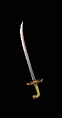
Sabre |
3 to 8 (5.5 Avg) | 25 | 25 | 0 | 32 | 2 | [-10] Asn, P - Very Fast Ama, B, D, N, S - Fast |
8 | |
|
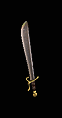
Falchion |
9 to 17 (13 Avg) | 33 | - | 0 | 32 | 2 | [20] Asn, P - Normal Ama, B, D, N, S - Slow |
11 | |
|
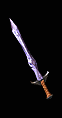
Crystal Sword |
5 to 15 (10 Avg) | 43 | - | 1 | 20 | 6 | [0] Ama, Asn, B, D, P, N - Fast S - Normal |
11 | |
|
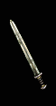
Broad Sword |
7 to 14 (10.5 Avg) | 48 | - | 0 | 32 | 4 | [0] Ama, Asn, B, D, N, P - Fast S - Normal |
15 | |
|
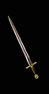
Long Sword |
3 to 19 (11 Avg) | 55 | 39 | 1 | 44 | 4 | [-10] Asn, P - Very Fast Ama, B, D, N, S - Fast |
20 | |
|
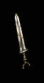
War Sword |
8 to 20 (14 Avg) | 71 | 45 | 1 | 44 | 3 | [0] Ama, Asn, B, D, N, P - Fast S - Normal |
27 | |
| Two Handed Swords | Min/Max 1h Damage (Barbarian Only) | Min/Max 2h Damage | Min Strength | Min Dexterity | Rangeadder | Durability | Sockets | Speed by Class | Quality Level |
|
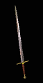
Two-handed Sword |
2 to 9 (5.5 Avg) | 8 to 17 (12.5 Avg) | 35 | 27 | 2 | 44 | 3 | [0] Ama, Asn, B, D, P, N - Fast S - Normal |
10 |
|
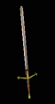
Claymore |
5 to 12 (8.5 Avg) | 13 to 30 (21.5 Avg) | 47 | - | 2 | 50 | 4 | [10] Asn, P - Fast Ama, B, D, N, S - Normal |
17 |
|
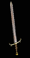
Giant Sword |
3 to 16 (9.5 Avg) | 9 to 28 (18.5 Avg) | 56 | 34 | 2 | 50 | 4 | [0] Ama, Asn, B, D, P, N - Fast S - Normal |
21 |
|
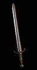
Bastard Sword |
7 to 19 (13 Avg) | 20 to 28 (24 Avg) | 62 | - | 1 | 40 | 4 | [10] Asn, P - Fast Ama, B, D, N, S - Normal |
24 |
|
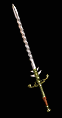
Flamberge |
9 to 15 (12 Avg) | 13 to 26 (19.5 Avg) | 70 | 49 | 2 | 50 | 5 | [-10] Asn, P - Very Fast Ama, B, D, N, S - Fast |
27 |
|
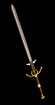
Great Sword |
12 to 20 (16 Avg) | 25 to 42 (33.5 Avg) | 100 | 60 | 2 | 50 | 6 | [10] Asn, P - Fast Ama, B, D, N, S - Normal |
33 |